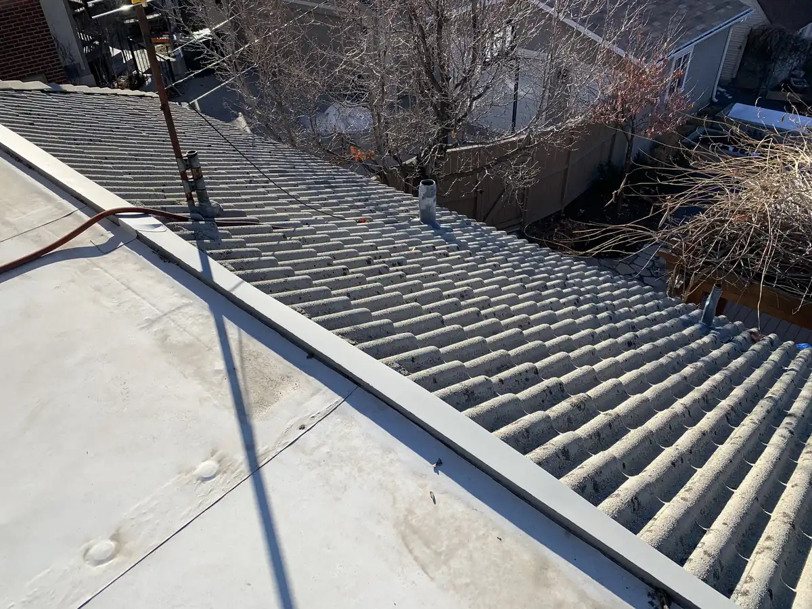

A roof-over (installing new shingles on top of the old ones) is allowed only in narrow cases. Under the International Residential Code, which Utah cities enforce, you can’t recover a roof that already has two or more layers, a roof that is water-soaked or deteriorated, or a slate or tile roof, and the shingle manufacturer has to allow it. Everywhere else, a tear-off down to the deck is the standard, and usually the better roof.
Roof-over, recover, layover: same idea
Contractors use several names for it: a roof-over, an overlay, a layover, or in code language a roof recover. They all mean the same thing: leaving the existing shingles in place and nailing a new layer on top. It skips the tear-off and the disposal, which is why it’s tempting.
A tear-off, or roof replacement, removes every existing layer down to the roof deck, the plywood or boards the roof is built on. Then the deck is checked, repaired where needed, and a complete new system goes on.
What the code says
The International Residential Code covers re-roofing in Section R908. Its rule on recovers, R908.3.1.1, lists the cases where a new roof covering may not be installed over an existing one:
- The existing roof or roof covering is water-soaked or has deteriorated to the point that it isn’t an adequate base for more roofing.
- The existing roof covering is slate, clay, cement or asbestos-cement tile.
- The existing roof already has two or more applications of any type of roof covering.
Some city handouts add a fourth condition that matters just as much in practice: no recover where the manufacturer’s installation instructions prohibit it. If the new shingle’s instructions say tear-off only, a roof-over isn’t an option.
The two-layer rule in Utah
Utah cities enforce the same rule. Bountiful City’s re-roof handout says it plainly: when a roof has two or more layers, only removal of the existing layers and roof replacement may be done. Requirements and permits are set by each city’s building department, so check with yours, but the two-layer limit is the common thread.
In other words, if your house was already roofed over once, the next roof starts with a full tear-off. On older homes, it’s worth finding out how many layers are up there before you compare bids.
Why a tear-off is usually the better roof
Even when a roof-over is allowed, a tear-off has real advantages:
- You can see the deck. Soft or rotted boards hide under old shingles. After tear-off, damaged areas get re-sheeted with new plywood before the new roof goes on.
- Ice and water membrane goes where it belongs. In a Utah winter, ice backs water up at the eaves and in valleys. A self-adhering ice and water membrane is installed directly on the deck there, which a roof-over can’t do properly.
- New flashing and drip edge. The places where roofs leak (walls, chimneys, pipes, valleys) get new metal instead of being shimmed around the old.
- A flatter, longer-lasting finish. New shingles over old ones telegraph every bump and curl underneath.
- Less weight. Every layer adds load to the framing, and a Utah roof already has to carry snow.
- Warranty. Manufacturer warranties depend on installation to their specifications. Ask how a recover would affect yours.
That’s why our own process starts with tear-off and disposal of the old materials. As we explain in our roofing Q&A, sometimes we then re-sheet the roof, and whether or not we do, the next step is installing the complete new system.

When a roof-over can make sense
A recover isn’t always wrong. On a roof with a single layer, a sound deck, no soft spots, and a shingle whose manufacturer allows it, it can be a legitimate choice, for example on a detached garage or shed, or where the budget really can’t stretch. The point is to make it a decision based on what’s actually up there, not a shortcut offered without a look at the roof.
How to check your roof before you get bids
- Look at the roof edge at a gutter or along a rake. Stacked shingle edges mean more than one layer.
- From the attic, look for stains, daylight, or sagging between rafters.
- Ask every bidder how many layers are on the roof now and how they know.
- Ask whether the bid includes tear-off, disposal and re-sheeting, and how damaged decking will be handled.
- Make sure the estimate names the system: underlayment, ice and water, flashing, drip edge and ventilation, not just “shingles.”
Our asphalt shingle system page lists every layer that should be on that estimate, and our warranty information page explains the coverage options. If you’d like a look at your own roof, our inspection and written quote cost nothing; get in touch.
Questions
01Can I put new shingles over my old ones?
Sometimes. Under the International Residential Code a second roof can go over the first only if the existing roof isn’t water-soaked or deteriorated, isn’t slate, clay, cement or asbestos-cement tile, and doesn’t already have two or more layers. The shingle manufacturer’s instructions must allow it too, and your city has the final word.
02What happens if my roof already has two layers?
Both have to come off. As Bountiful City’s re-roof handout puts it, with two or more layers only removal of the existing layers and replacement may be done.
03How can I tell how many layers I have?
Look at the roof edge at a gutter or rake: stacked shingle edges show the layers. A roofer will confirm on the inspection, and it should be written on the estimate.
04Why tear off if a roof-over is allowed?
Because a tear-off lets the crew see and re-sheet soft decking, install ice and water membrane at the eaves, and replace flashing and drip edge instead of working around the old ones.
05How long does a tear-off add?
Tear-off and disposal is simply the first part of the job. Most of our re-roofs take about a week from start to finish, give or take a day or two for weather.
Sources
- International Residential Code, Section R908.3.1.1 (Roof recover not allowed), as reproduced in the City of Gillette re-roofing handout: gillettewy.gov
- Bountiful City, Utah, residential re-roof handout: bountifulutah.gov
- City of Des Moines, roof shingle requirements (manufacturer instructions and recovers): City of Des Moines (PDF)